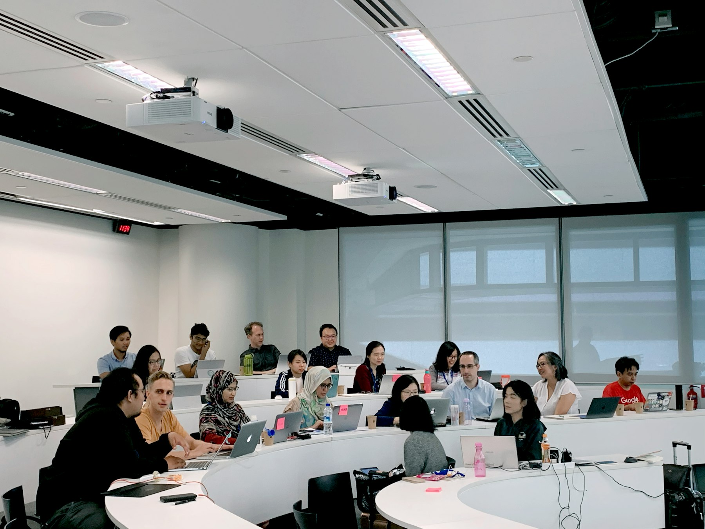
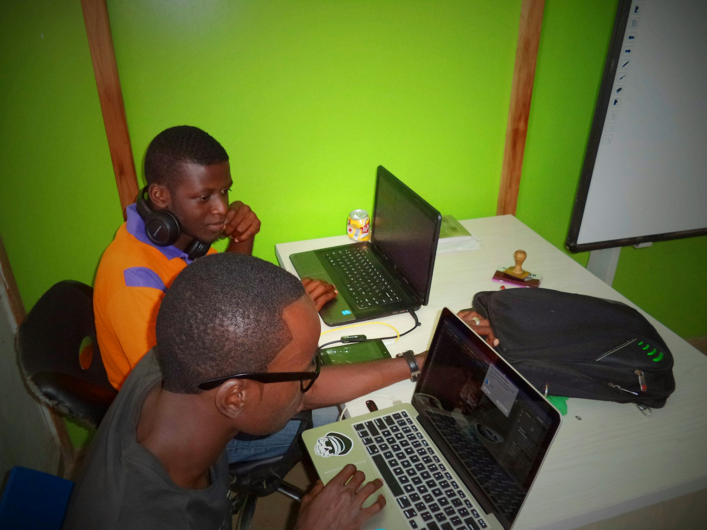

TL;DR
Mechanical engineers can quickly launch side hustles like CAD design or 3D printing. Avoid underpricing and manage time effectively to succeed. Leverage tools like Trello and QuickBooks for organization. Start with a goal of 5-10 hours per week.
Side Hustles for Mechanical Engineers: Unlock Your Earning Potential
Mechanical engineers are equipped with unique skills that can be monetized through various side hustles. Your expertise in CAD software, coupled with problem-solving abilities, grants you the upper hand to delve into opportunities like freelance design, consulting, or even product development.
For instance, creating prototypes using 3D printing can lead to lucrative gigs. By leveraging these seldom-recognized skills, engineers can transform their passion into a secondary income stream.
Why the Default Approach Fails for Engineers Seeking Extra Income

Why the Default Approach Fails for Engineers Seeking Extra Income
Many mechanical engineers fall into the trap of being overly reliant on their salaried positions, which typically offer fixed income and limited opportunities for bonuses or overtime.
This conventional route not only restricts financial growth but also stifles creativity and career development. For instance, a mechanical engineer might work a standard 40-hour week at a salary of $75,000.
However, relying solely on this income can lead to financial stress if unexpected expenses arise. The stark reality is that by engaging in side hustles—such as starting an engineering consultancy, creating educational courses, or even performing freelance design work—engineers can significantly enhance their income potential.
Take the example of an engineer named Sarah, who, after hours, began offering consulting services to local startups in need of mechanical design expertise. Charging $100 per hour, she completed two projects a month, each requiring about 10 hours of her time.
This simple side hustle generated an extra $2,000 monthly, translating to $24,000 a year. Not only did this supplement her fixed salary, but it also allowed her to develop relationships with various businesses, enhancing her portfolio and resume.
Moreover, side hustles offer flexibility that a fixed job often cannot provide. For example, if Sarah had a busy month at her main job, she could adjust her consulting hours to accommodate that, potentially earning additional income without overextending herself.
However, the trade-off includes managing time effectively; if she dedicates too many hours to side projects, it might impact her performance at her primary job, leading to burnout.
Recognizing the limitations of the traditional work model opens the door to countless possibilities, allowing engineers to cultivate a more balanced and financially robust career.
The Core Workflow: Establishing Your Side Hustle in Engineering
A structured approach is essential for successfully launching a side hustle. The first step involves identifying your niche—whether it’s CAD design or mechanical troubleshooting. Next, set realistic goals and timelines to manage your workload effectively.
Here's a simple workflow:
- Identify your services: Decide what skills you want to offer, like 3D modeling.
- Create a portfolio: Showcase your past projects to attract clients. Platforms like Upwork or Freelancer can facilitate finding work.
- Promote your services: Utilize LinkedIn and other social media channels to connect with potential clients or join engineering forums.
- Set a pricing model: Research competitors and set your rates.
Remember, underpricing can lead to burnout.
- Track your progress: Regularly review your milestones to assess how your side hustle is performing.
While this path requires diligence and time management, it yields rewarding outcomes.
A Real Example: From Engineer to Entrepreneurs

Consider Tom, a mechanical engineer who wanted to augment his income. He dedicated 30 days to launch a 3D printing service. Here’s how he broke it down:
- Week 1: Market Research
- Identify potential clients and competitors, focusing on local businesses that could use prototypes.
- Week 2: Portfolio Development
- Create at least three sample projects to showcase capabilities.
- Week 3: Marketing
- Set up a basic website and social media profiles to promote services.
- Week 4: Client Acquisition
- Reach out to local businesses, offering introductory discounts to entice initial collaborations.
By the end of the month, Tom managed to secure three projects, quickly turning his side hustle into a profitable venture. This showcases not only the opportunities available but also the structured approach to make them a reality.
Mistakes to Avoid and Tradeoffs in Your Side Hustle Journey
As with any entrepreneurial endeavor, several pitfalls could hinder your side hustle’s success. One common mistake is underpricing your services. For example, if you’re a mechanical engineer offering CAD design services and you charge $25 an hour instead of the market rate of $75, you may attract clients who are primarily looking for the cheapest option.
This could result in working long hours—say, 20 hours a week on side projects—only to earn $500, which isn't worth your time when considering your skills and experience.
A tradeoff also exists between time and earnings. While taking on multiple projects may provide a quick income boost, it can lead to severe schedule strain. Let's say you accept three different projects with overlapping deadlines, each requiring an estimated 15 hours per week.
That leaves you with little time for self-care and could jeopardize your performance in your full-time job. If one of your side projects delays delivery, the client may not be understanding, and your reputation could suffer.
Additionally, overcommitting can lead to burnout. Imagine finding yourself working evenings and weekends, only to deliver subpar work because you’re exhausted. If a client receives a poorly executed design and decides to leave a negative review, that could have long-term consequences for your business.
Learning to say no and establishing clear client expectations will be vital in navigating this landscape. Start by assessing your capacity realistically. If you can only handle 10 hours of side work per week without compromising your main job performance, communicate this clearly to clients. Setting boundaries not only preserves your mental health but also upholds the quality of work for which you want to be known.
What to Use Next: Tools and Resources for Side Hustle Growth
To better manage your side hustle, using the right tools can streamline operations and enhance efficiency. Consider these resources:
- Trello or Asana for project management can help in tracking tasks and deadlines efficiently.
- Slack for communication if you’re collaborating with others.
- QuickBooks for managing your finances and invoices effectively.
- CAD software like SolidWorks can be a key asset if you're offering design services.
These tools not only save time but also ensure you maintain a professional image, which can significantly affect client retention and revenue.
FAQ
What side hustles are most profitable for mechanical engineers?
Popular options include CAD design services, freelance consulting, and 3D printing or product prototyping.
How much time should I dedicate to my side hustle each week?
It's advisable to start with 5-10 hours per week, gradually increasing based on your workload and client demands.
Is freelancing worth it, or should I focus on side projects?
Freelancing offers flexibility and potentially higher pay, but side projects can be lower risk, allowing you to test ideas.
This article has been reviewed for practical usefulness and updated when information changes.
Next step
Use the article as a decision point, not just reading material. Your next system matters more than more browsing.
Search more articles
Find related tools, workflows, and guides.
Photo credits
- Photo 1: Annie Spratt via Unsplash
- Photo 2: CX Insight via Unsplash
- Photo 3: Claire Nakkachi via Unsplash
- Photo 4: Code💻 Ninja⚡ via Unsplash
- Photo 5: Marina Nazina via Unsplash